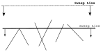

Previously, I have done line segment intersection Segment Intersection by a method that is not considered efficient, $O(n^2).$ That algorithm is what is termed the naive method. The work function just tests every segment against every other segment to see if there is an intersection. Here is the flow of the algorithm. When the function has intersection is true, then it returns true and the number of intersections is incremented. Most notably, even though the program has the code to compute intersection points, it didn't do that. It merely decided if segments intersect and then drove on. Which is fine for only a count.
for (let i = 0; i < g.length; i++) {
for (let j = i; j < g.length; j++) {
if (i != j) {
let p0 = [g[i][0], g[i][1]]; //first endpoint of a segment
let p1 = [g[i][2], g[i][3]]; //second endpoint of the segment
let q2 = [g[j][0], g[j][1]]; //first endpoint of next segment
let q3 = [g[j][2], g[j][3]]; //second enpoint of next segment
let Ig = hasIntersection(p0, p1, q2, q3);
if (Ig) { cnt = cnt + 1; }
}
}
}
This doesn't sound very important, but it is critical to the method. Every intersection involves at least two non-parallel segments. On a horizontal sweep line, if those segments intersect,

How the algorithm works
We have to know the order of segments crossing the sweep Line from left to right. A way to do that is to keep track of segments on the sweep line in a binary search tree (BST). I am not going to explain the BST code here, but I will state its methods and briefly detail what each one does.
To operate the BST, we use four classes. Here is the constructor list.
class Point {
constructor(id, x, y) {
this.id = id;
this.x = x;
this.y = y;
}
}
class TreeNode {
constructor(segment) {
this.segment = segment;
this.left = null;
this.right = null;
this.parent = null;
}
}
class Segment {
constructor(id, p1, p2) {
this.id = id;
this.p1 = p1;
this.p2 = p2;
this.directionVector = [p2.x - p1.x, p2.y - p1.y];
}
}
class SweepEvent {
constructor(y, type, segments, x = null) {
this.y = y;
this.x = x;
this.type = type;
this.segments = segments;
}
}
class BST {
constructor() {
this.root = null;
}
}
BST methods
These methods will be defined based on a BST used to store segments adjacent to each other on the sweep line.- Insert: insert(segment) Add a segment to the BST, such that it is correctly sorted from left to right along the sweep Line.
- Find a node: findNode(segment) I haven't said what a node is. In this context it is an object of the class TreeNode() and it is only ever temporarily built. After building it is a segment and stored in the segments array.
- Delete: delete(segment) Remove a segment from the BST and keep every segment in the correct order along the line.
- PrintInOrder: printInOrder(node) 'node' should be the BST root = sweepTree.root.
- getSegmentsInOrder(): Returns an array of segment objects in order along the sweep line.
- printTree(node): //node should be the BST root = sweepTree.root. Prints the tree to the console such that it can be constructed by hand.
- Predecessor: predecessor(segment) Return the in-order predecessor of the node containing 'segment', or null if it has none. This is how we find which segments are adjacent.
- Successor: successor(segment) Return the in-order successor of segment, or null if it has none.
- buildBalanced(arr): sweepTree.buildBalanced(orderedSegments); //build new tree from orderedSegments. sweepTree is an array of segments that are current on the sweep line
Segment Pre-processing
There is good reason to pre-process the segments. For one thing, there is no use in having a degenerate segment, where the two ends of the segment are represented by the same point. So we can make one trip through all of the segments and remove those. Also, we don't want to consider overlapping segments, where there would be an infinite number of intersections. To avoid that, we break overlapping segments into discreet segments which share an endpoint. In the figure, three overlapping segments have been processed into five new segments that share end points but do not overlap, except for that shared point.
Segment orientation
Since a sweepLine is going to come from above the segments (larger y value), it is desireable to orient the segments such that each segments has its first end point higher than its second one. That way, when a segment is encountered, we know immediately where to find its upper end point. Horizontal segments are also oriented and their least x value is made to the be first end point.
Shared end points
When two segments share a single end point, then that end point is obviously an intersection of those segments. As such, it is made into an intersection event. So those events can be put into the event queue before we begin processing the queue. Discovering those shared end points must be done with attention to time complexity. We can't just compare every segments points with every other segments points! So what we do is build an end point Map using javascript's (Map) feature. (Identical to Python's Dictionary). The Map key will be a string made from the segment's point.x and point.y. The Maps value will be the segment Id. Here is the function that does it. Note that it uses a function expression named addEndPoint which cannot be hoisted. This code just builds and returns the map.
function buildEndpointMap(segments) {
const m = new Map();
const addEndpoint = (point, segmentId) => {
const ky = `${point.x},${point.y}`;
if (!m.has(ky)) {
m.set(ky, []);
}
m.get(ky).push(segmentId);
};
//for all segments, add 2 endpoints per segment
for (const seg of segments) {
addEndpoint(seg.p1, seg);
addEndpoint(seg.p2, seg);
}
return m;
}
Next we need a function that calls buildEndpointMap so that we can learn which segments actually share a point. The function sharedPoints(segments) will create yet another Map which checks if the number of segments with the same end point is multiple (2 or more). If it is, then that point is added to the new Map, and it is returned. Here is the code for that piece.
function sharedPoints(segments) {
const endpointMap = buildEndpointMap(segments);
debugLog(endpointMap);
const result = new Map();
for (const [key, segs] of endpointMap) {
if (segs.length > 1) { //more than 1 point occurs at that coordinate
result.set(key, segs);
}
}
return result;
}
Finally, just before beginning to process the queue, we have to take the end points which are shared by multiple segments and create intersection events from them. To do that, we have to disect the "shared" map and add unique points to a global set named recordedIntersectionPairs.
function recordSharedEndpointIntersections(shared) {
for (const [key, segs] of shared) {
/*
key is a string like "3,7" (a coordinate pair encoded as text).
.split(",") turns it into ["3", "7"].
.map(Number) turns it into [3, 7] (real numbers).
Destructuring assigns x = 3, y = 7.
So the next line is a compact way of parsing string "x,y"
into two numeric coordinates.
*/
const [x, y] = key.split(",").map(Number);
// Every distinct pair of segments sharing this point.
for (let i = 0; i < segs.length; i++) {
for (let j = i + 1; j < segs.length; j++) {
const s1 = segs[i];
const s2 = segs[j];
const pair = pairKey(s1, s2);
if (recordedIntersectionPairs.has(pair)) {
continue;
}
recordedIntersectionPairs.add(pair);
intersections.push(new Intersection(s1, s2, x, y));
}
}
}
}
function pairKey(s1, s2) {
return s1.id < s2.id
? `${s1.id},${s2.id}`
: `${s2.id},${s1.id}`;
}
The tiny bit of code that sews this all together is still a part of setup() in p5.js. It merely gets the shared points, makes an intersection event from them and also adds the segments to the global recordUniqueIntersection(x,y,segs) so the user knows about them too. The most important line in the code below is events.push(new SweepEvent).
shared = sharedPoints(segments);
//make intersection events from segments that overlap at a single point only.
let j = 0;
for (const [key, segs] of shared) {
//assign the event point to x and y as numbers
const [x, y] = key.split(",").map(Number);
events.push(new SweepEvent(y, "intersection", segs, x));
recordUniqueIntersection(x, y, segs);
++j;
}
However, during processing of the events, other intersections will be discovered due to testing adjacent events that are on the sweep line. They must be inserted into the event queue in the correct order. No new events will ever have to be placed above the sweep line, but it is importanat that we always process the next event in the queue, knowing that such event may not have been there until after the current event has been processed.
Event Queue
An event queue is an array of object from the class SweepEvent(). It has coordinates on the plane (x,y), a "type", and an array of segment objects. Those segment objects are pertinent to the event. The "type" of event can be
- "Insert" A segment has appeared on the sweep line and gets added to the BST.
- "Delete" A segment has appeared on the sweep line and
- "Intersection"
- "Horizontal".
The event queue has been partially filled before processing it begin. It has all of its "Insert" and "Delete" events as well as any intersections as a result of segment end point matches. Each one of the events gets different event handling. After segments have been created and preProcessed, each ordinary point has become either an insert event or a delete event. An ordinary point is one end of an ordinary segment, which is a segment that is not horizontal. Its upper end point becomes an "insert" event and its lower end point becomes a "delete" evenet. Each segment with two ordinary points is therefore two events. It does not matter if the segment shares an end point with another segment or even multiple segments because that is handled in event processing and shared end points in the data set were already added as intersection events. The idea is that many events are in the event queue prior to the sweep line starting down the page.
Event Processing
There are three different drivers for processing events. Think of them as "manual", "controlled speed", and "fast". They all do the same thing, so I will explain only the "manual" method. The important javascript:
const nextEvent = events.find(e => !processedEvents.has(e));At an "insert" event a segment is put into the BST in its proper place. Then we figure out what segments are adjacent to the new segment and if they intersect. Remember all intersections will be below the sweep line. If they intersect, then we have to add them to the event queue and likely need to sort again that queue. We also need to add the intersection to a growing list of unique intersections, which is carried as a Map for convenience. The key of uniqueIntersections is `${x}, ${y}` and its values is an array with name segments.
At a "delete" event, we remove the segment from hte BST, but doing that may cause new segments to become adjacent. Those then have to be checked for intersection, and if they intersect, then the same sequence as before must take place.
So what happens at an "intersection" event?
- Get the complete BST ordering (array "orderedSegments") and put the array of segments that intersect at this event into 'iarr'.
- An intersection event includes more than one segment, usually two, but could be any number greater than one.
So we have a line of code:
let activeSegments = iarr.filter(segment => orderedSegments.includes(segment)); - iarr: This is the original array from which elements will be filtered.
- orderedSegments: This is another array that contains the values to check against.
- filter() Method: This method creates a new array filled with elements that pass a test provided by a function. In this case, the test is whether each element in iarr is included in orderedSegments.
- Arrow Function: The syntax segment => orderedSegments.includes(segment) is an arrow function that takes each element (referred to as segment) from iarr and checks if it exists in orderedSegments.
- includes() Method: This method checks if a specific value (in this case, segment) is present in the orderedSegments array. It returns true if the value is found and false otherwise.
- Now we need to reorder the activeSegments so that they are the same as the BST.
- Then the activeSegments can be reversed. That is, if segments entered the intersection in the order A B C D, they need to exit the intersection in the order D C B A. This order can then be spiced into "orderedSegments" which is external to the BST,
- and the BST can be rebuilt and while we are at it, balanced.
- Reworking the BST also means checking new adjacencies and perhaps adding any new intersections to the event queue.
This JavaScript code performs a specific operation on two arrays, "iarr" and "orderedSegments". Here is a breakdown of its components:
The last event type is a "horizontal" line. We keep this aside from the BST and handle it as an exception. A horizontal line results in the greatest time complexity of any event.
- We proceed through all of the "not horizontal segments" one time. Most likely, that can be a large number.
- We then test each of those segments for an intersection with our horizontal event. Fortunately, testing to see if there is an intersection is quite a bit faster than finding that intersection.
- Of course if there is an intersection, then we find and record it.